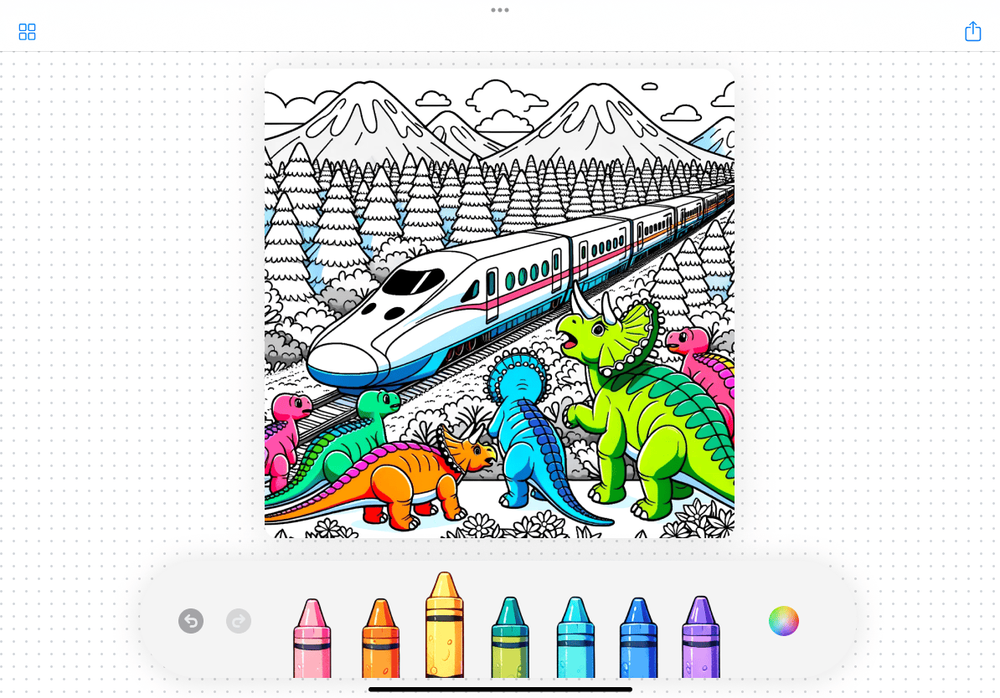
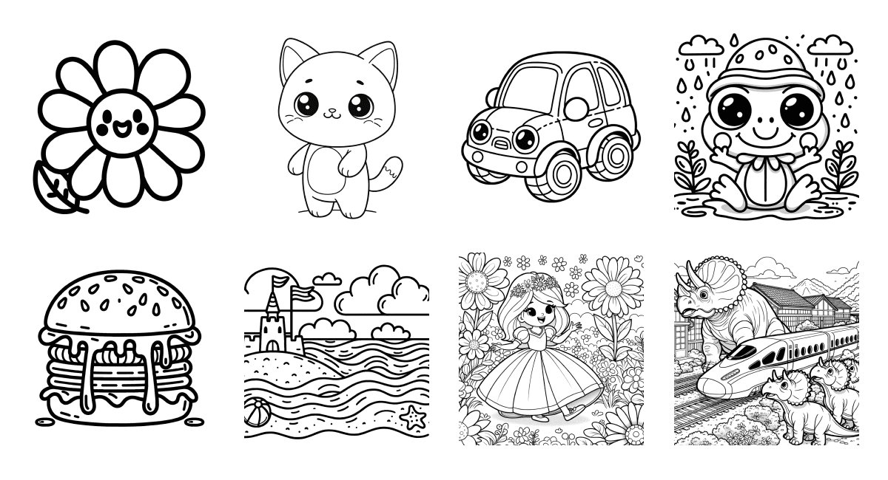
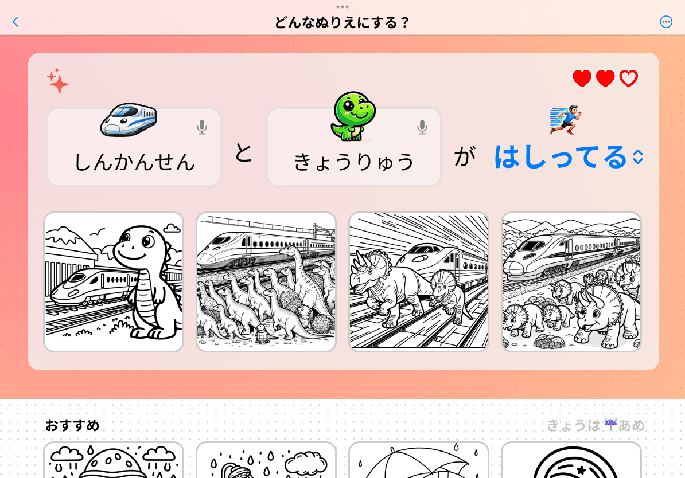

投稿型のウェブ図鑑プラットフォームを運営する株式会社ズカンドットコム（東京都千代田区、代表取締役 山出潤一郎）は、タブレット上でこどもが自分自身で好きな塗り絵を作れる、『AIぬりえアプリ』と、同アプリ上でそれをコレクションするウェブサイト『ぬりえ図鑑』を開発しています。


キーワードからオリジナルの塗り絵を生成
塗りたい絵のキーワードを入力すると、AIがオリジナルの塗り絵原画を生成します。これまで、塗り絵の原画は大人が作り、大人から与えられるものでしたが、こどもが自分で好きなものを作れるという、まったく新しい体験を提供します。
たとえば、「恐竜 新幹線」と入力するとこども達にとって夢のコラボが実現されます。シンプルなキーワードからこどもの期待を汲み取り、想像力豊かな塗り絵を生成するためにGPT4を活用しています。アプリのUIはこども向けにデザインされており、キーワードは音声で入力することもできます。生成される塗り絵の難易度は発達に合わせて調整可能で、さらに、AIが塗り絵ごとにおすすめのカラーパレットを提案する機能も研究開発します。

『ぬりえ図鑑』が塗り絵原画の宝庫に
AIとこども達が好奇心のままに生成した塗り絵の原画は、zukan.comの公式図鑑として公開予定の『ぬりえ図鑑』に投稿されていきます。ここにストックされる膨大な量の塗り絵の原画は、AIと人の手によって分類・整頓されていき、無料でアプリ内で利用したり、印刷したりすることも可能です。こどもにしかわからないトレンドの最先端がここに集まってくるので、家庭や保育所での塗り絵のネタ探しに、もう困ることはありません。
安全性の確保
『AIぬりえアプリ』ではOpenAIのDALL·E3の活用により、著作権上問題のあるキャラクターを生成しないようになっています。また、暴力的であったり性的であるなど、こどもにとって不適切なコンテンツが表示されないよう、独自のフィルタリングを実施します。今後の展望として、DALL·Eの更なる進化にも注目しています。
こどもたちの豊かな創造性や好奇心のために
『AIぬりえアプリ』は、塗り絵という世界共通の、誰にでも分かりやすい遊びを通して、こどもたちが自分自身で、好奇心のおもむくままに創作していける、これまでにない体験を提供します。それにより、こどもたちの豊かな創造性や好気心を育むことに貢献してまいります。
技術的なお問い合わせや共同研究、業務提携に関するご相談は、以下の問い合わせ先までお気軽にご連絡ください。
担当: 直江憲一
MAIL: info@zukan.com
ニュースレターで、最新情報をお届けしています。
https://coloring.zukan.com